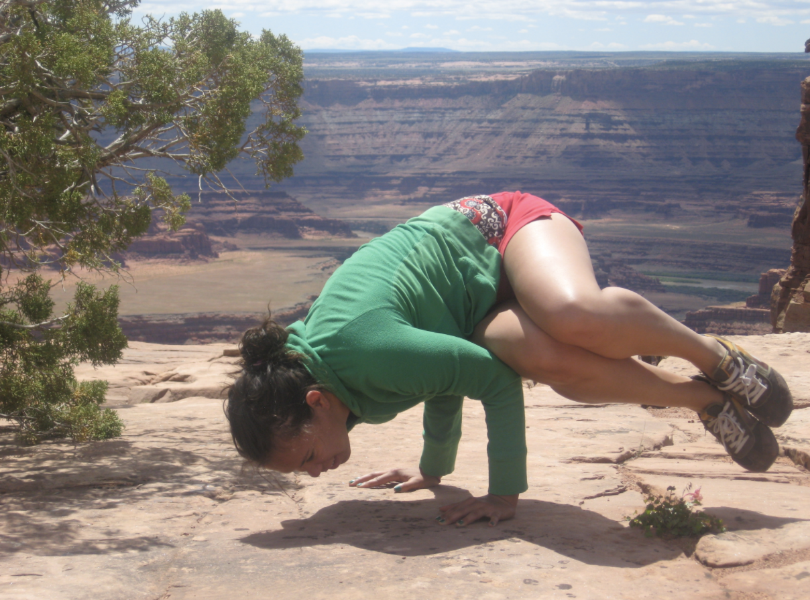
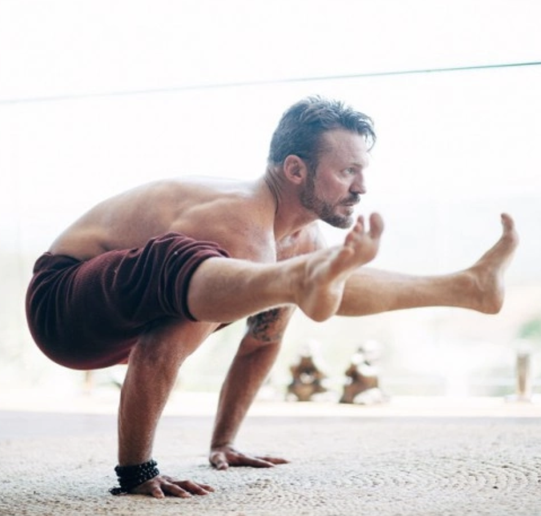

What We Do
Being healthy doesn't have to be rocket science (which is great, because few of us are!) Yet, these days, with so much information out there from so many sources, it can be overwhelming to understand how to be as healthy as possible.
- Are you overwhelmed by the amount of health information available online?
- Have you been told conflicting things about how to optimise your health?
- Have you been trying to get healthy, but not seen the results you want?
- Are you always chasing the newest fad in food, fitness and alternative health?
That's where we come in.
Leave the reading to us. Let us test all the new fitness fads out there. We'll try all the options when it comes to alternative health. New, whole foods? We've tasted them all.
Our team of health and wellness experts will review your health background and goals and recommend a bespoke nutrition, fitness and wellness programme, based on the latest health and wellness research. Don't worry, you'll get to try out new things, too!
Who We Are
We are a team of fitness, nutrition, wellness and alternative health experts who believe that a holistically healthy life is one of balance.
Dr. Khaleelah Jones is the founder and CEO of Pleasure Trap. She has degrees in Biology and genetics, and a 200-hr. YA yoga teacher certification.
Karsten Greene is a chemist and biochemical engineer. He is the CTO of Pleasure Trap and our resident meditation guru.
Laura MacKinnon is a nutritionist and acupunturist with degrees from Bastyr and Widener. She is the product development lead, and offer massages to the team each week.
Pleasure Plans
So what does it take to get healthy? We'll let you in on a little secret: its not about trying every new product or routine. It takes planning and perseverance. Enter, Pleasure Plans.